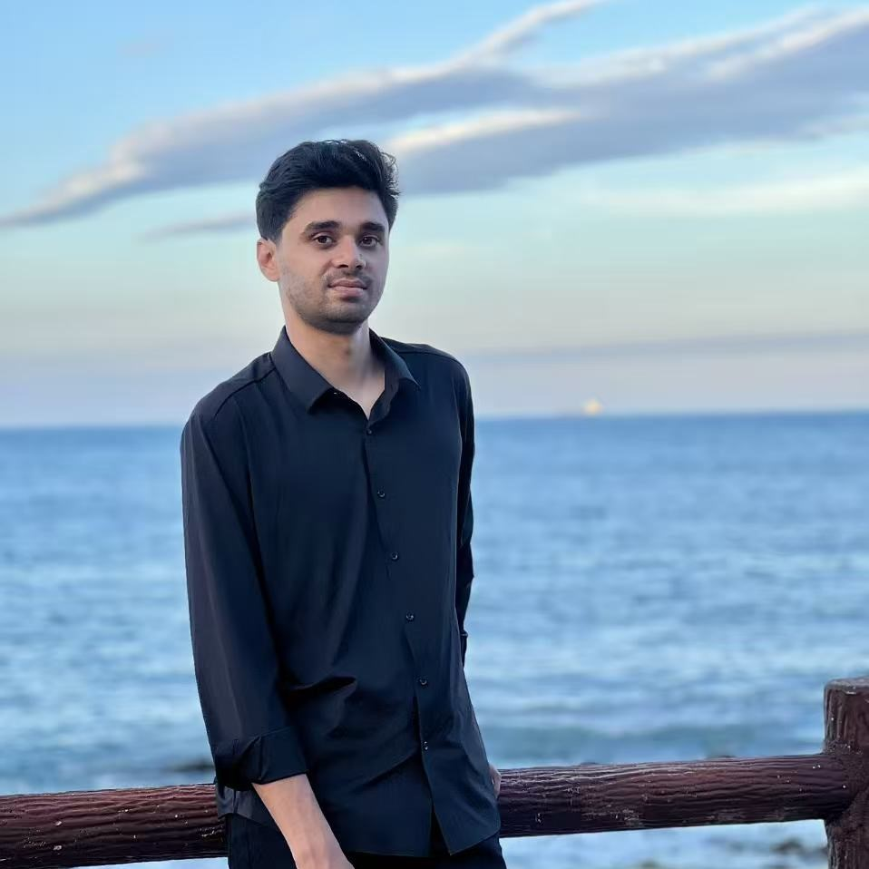

Hi. I'm MD IMRAN KHAN.
AI & Robotic enthusiast and Aerial Photographer
Hobby
I love to spend my time with something where I can express creativity. Building and flying drones, model aircrafts, playing guitar, and playing games are a few of the many hobbies I have. However, Robotics is a field which gives me a purpose as well as pleasure of working. I have spent most of my time working on UAV systems and aerial shooting.
Motivation
My passion and perseverance fueled me to work hard. I am glad to find some of the like minded people in our school and university to work with and learn together, not only the technical knowledge but also the leadership skill, teamwork, compassion and empathy. At some point of this journey I realized that only being genuinely passionate and talented does not work alone without sincerity and consistency.